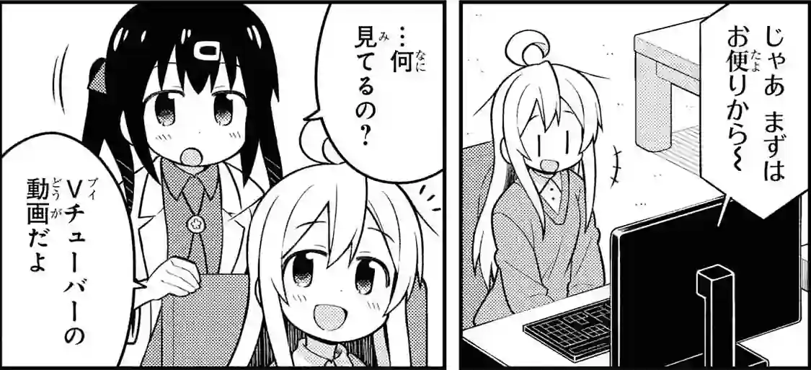

Immersion with YouTube
YouTube is a popular website where people can upload and watch videos. Through watching YouTube you can immerse with native Japanese content. Such content can be of particular interest to people who want to understand colloquial Japanese, speech with a lot of mumbling, slurs and slang. There are many language-dense streams and podcasts on YouTube that can be used for background listening. You can also find news channels with more formal speech.

How to access
Like many popular big tech websites today, YouTube uses proprietary JavaScript code, which is not safe to run. If you go to the website, it won't work if you block proprietary JavaScript code from running. In addition to that, YouTube contains privacy violating trackers and collects data about users. To access the videos, use various alternative ways that minimize tracking.
There are several ways you can watch YouTube.
- Invidious. Invidious is an alternative front-end to YouTube. It lets you choose from a number of instances based on their health. A list of Invidious instances can be found on https://api.invidious.io/. Invidious gives you direct download links for every video.
- yt-dlp. yt-dlp is a program to download videos. To search for videos and obtain their links, you still need to use a front end such as Invidious or youtube-viewer.
- mpv.
mpvis a video player. It can utilize a built-inyt-dlphook to play YouTube videos. I recommend downloading videos before watching them, however. Storing immersion material locally makes sentence mining substantially easier. - Not using YouTube at all.
Explore privacy-respecting platforms
like PeerTube and Odysee.
Chances are, you'll find Japanese immersion content there too.
yt-dlpworks on these websites as well.
Subtitles
Subtitles play an important role for language learners. On YouTube, you can find a wide variety of videos in Japanese with built-in Japanese subtitles. Not every video has human-made subtitles, and auto-generated subtitles aren't accurate. Avoid using them if possible.
To find content with subtitles,
open Invidious,
click on [+] Filters and under "Features" enable "Subtitles/CC".
Or you can try adding "字幕可" or "CC" at the end of the search term.
After downloading a video and subtitles for it,
you can put it into subs2srs
or watch it in mpv with mpvacious and make flashcards.
The following sites offer video search based on target language subtitles:
We recommend utilizing their search features but using mpv to watch the videos.
yt-dlp
yt-dlp
is a program
that can be used to download videos from YouTube and similar sites.
yt-dlp can also download audio tracks separately.
On Arch Linux, yt-dlp can be installed by running this command:
sudo pacman -S yt-dlp
If you're on Ubuntu, it is recommended to use pipx.
pipx install "yt-dlp[default]"
To download a video, execute:
yt-dlp 'https://youtube.com/<video>'
If you want to download just the audio, use this command:
yt-dlp --extract-audio --format bestaudio/best 'https://youtube.com/<video>'
Tip: add these commands as aliases to access them without too much typing.
yt-dlp reads its configuration from ~/.config/yt-dlp/config.
See my
example configuration file.
This configuration enables yt-dlp to automatically download
Japanese (ja) subtitles in ass format
and save the downloaded files to a dedicated folder.
Change output location (marked with -o) to a folder of your preference.
See man yt-dlp for a comprehensive list of options.
mpv
It is possible to open a YouTube link directly in mpv and watch it without saving the video on the hard drive. All you need to do is pass a video link as an argument to mpv.
mpv 'https://youtube.com/<video>'
I personally don't do so because there's a few hiccups that interfere with things like rewinding and making Anki cards.
Mobile devices
If you have an Android device, install one of the YouTube clients from F-Droid to access YouTube and keep your privacy.
- NewPipe.
- LibreTube An alternative frontend for that uses the Piped API to load data and play videos.
- Tubular. NewPipe with SponsorBlock.
Notes
- YouTube No Translation. Web browser add-on that prevents YouTube's automatic translations. It keeps titles, descriptions, and audio in their original language.
- BlockTube. This browser extension allows you to block videos and channels that are not in your target language. It is for people who use the official YouTube website.
- pipe-viewer is a lightweight YouTube client for Linux.
- In my dotfiles I have a script that sorts Invidious instances based on the number of users. The least used instances are usually faster.
- Install Privacy Redirect or LibRedirect to avoid accidentally going to the official website when opening YouTube links.
- If you go directly to
youtube.com, keep Watch on Odysee enabled to be notified when an alternative Odysee version of the video is available. - UntrackMe for Android redirects YouTube links to Invidious. On top of that it can transform many other links.
- If you add
24/7orライブbehind your searches on YouTube, you can find channels that stream Japanese all day. - charts.youtube.com/jp. Songs trending in Japan.
Tags: guide